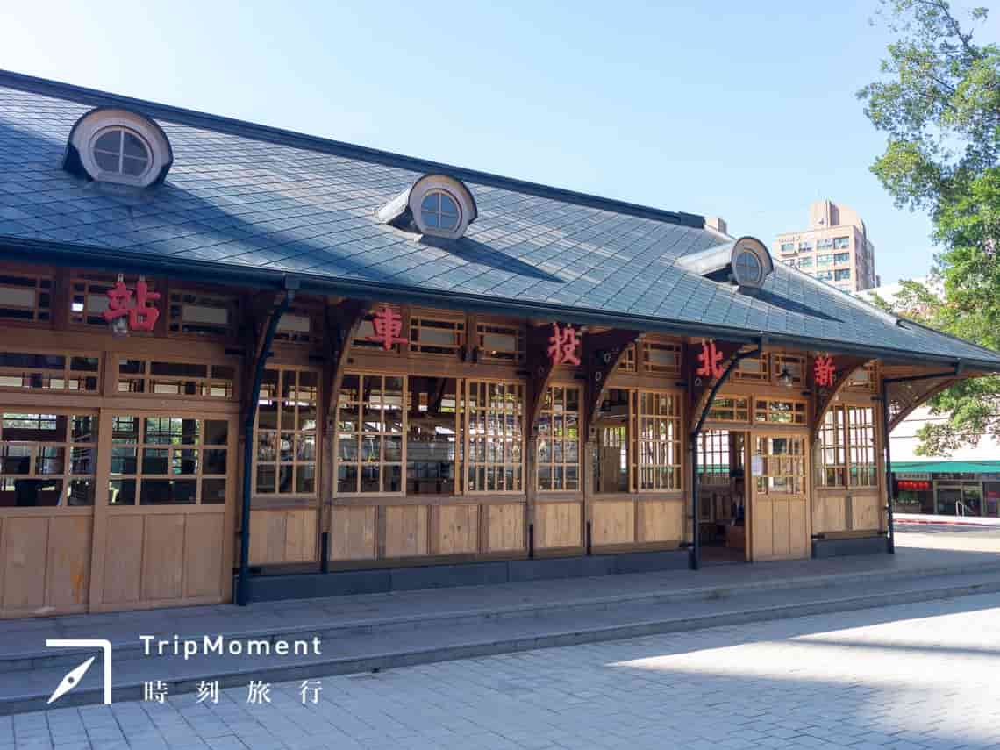

玖拾年代
西門站-現今風貌

車站概要
本站最早設於日本統治時期1901年，原為臺灣總督府交通局鐵道部淡水線車站，戰後由臺灣鐵路管理局接手營運，為一地面車站，後因改建捷運淡水線於1988年停止營運，原站體亦一併拆除。 現今車站位於北投路、育仁路間，育仁路與光明路口一帶，接近大興街口，站名取自當地地名及原有站名，「北投」為平埔族凱達格蘭族語中「女巫」之意。車站編號為R22。 2018年夏季台北捷運於部分車站新增日本語到站廣播，與日治時期採音讀〔ほくと〕 Hokuto不同，此次新增以華語譯音「ペイトウ Peitō」廣播。
“本站為高架車站，設有兩座出入口，由於站體寬40公尺，為避免受中國華北式屋頂跨距之限制，而以空間桁架及玻璃帷幕牆構成，彰顯現代科技建築手法，具有高度透明性的站體造型頗為特殊。本站計有島式月台一座及側式月台兩座，設有半高式月台門，為台北捷運目前唯一採用高架混合式月台的捷運車站。”

小知識

新北投站
高架二層車站位於大業路旁，與中和街、泉源路、中山路、光明路的交叉路口西側；車站編號為R22A。站名取自地名及日治時代原站名「新北投」（相對於北投站一帶之「舊北投」地區）。 本站原先設計為捷運淡水線營運區間之其中一個主線終點站，卻因周遭居民抗議噪音問題而將其改為支線終點，而臺北捷運公司有將此方案重啟之計畫，本站將可能成為「新北投-大安(離峰)/象山(尖峰)」營運區間之終點站，不過因噪音測試仍超標，目前仍難以實現相關計畫。
“高架二層車站，一個島式月台，二個出入口。地下一樓為商店街，需從七星街進入。”
小知識